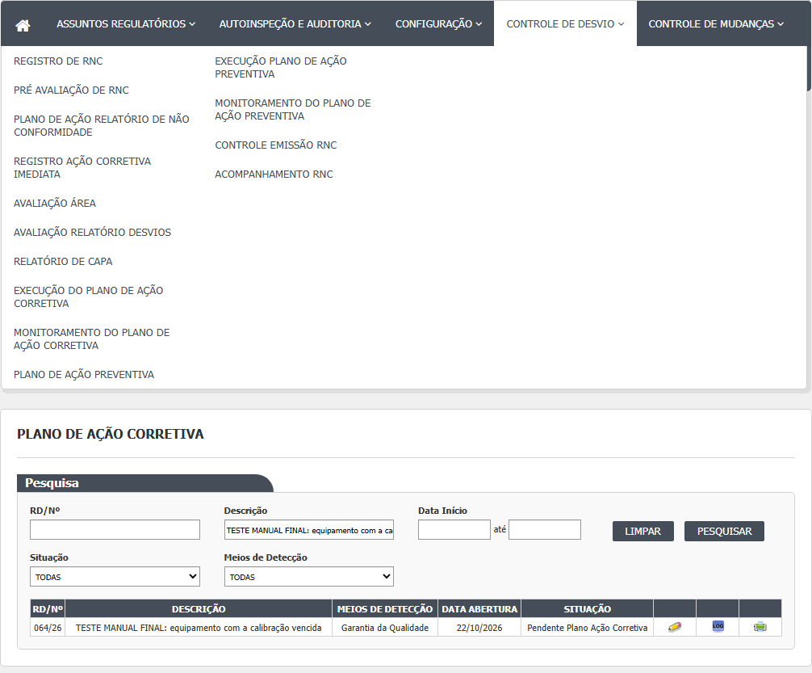
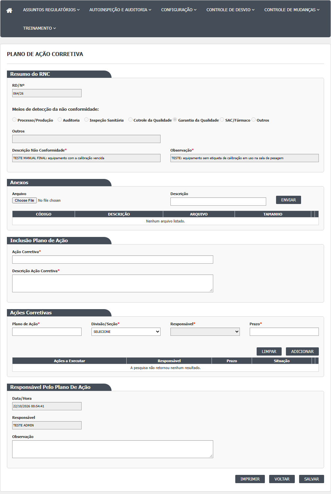
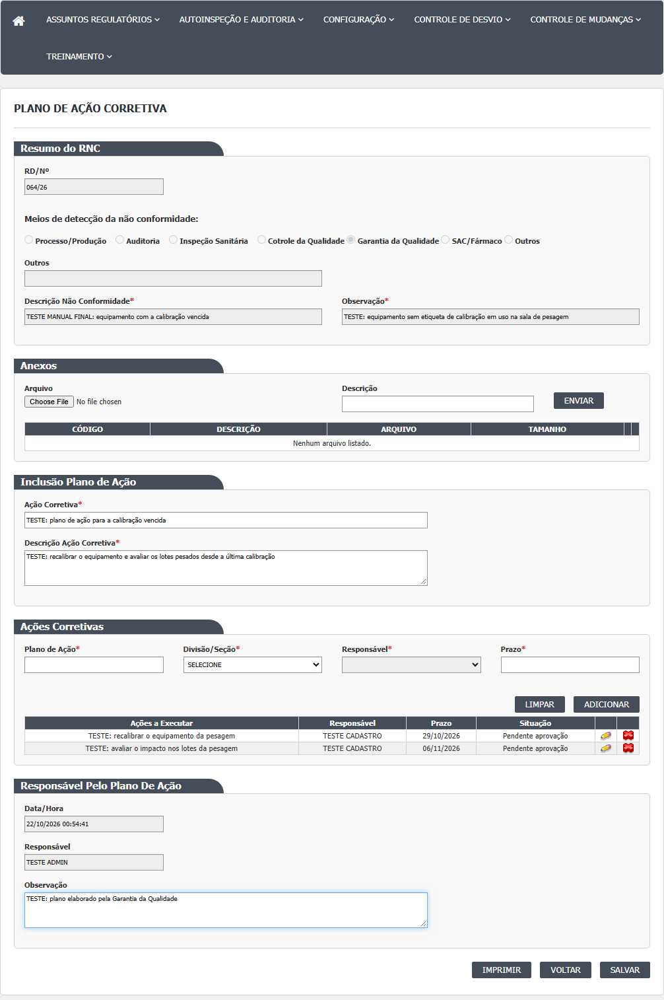
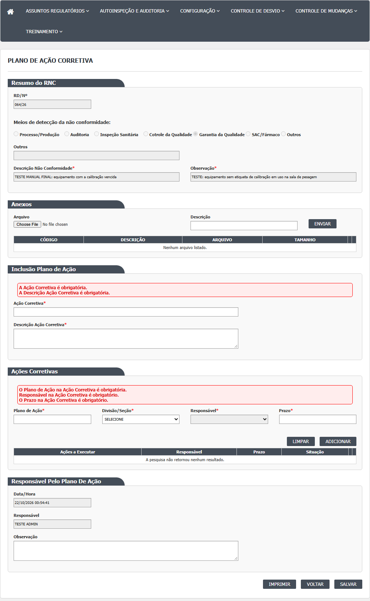
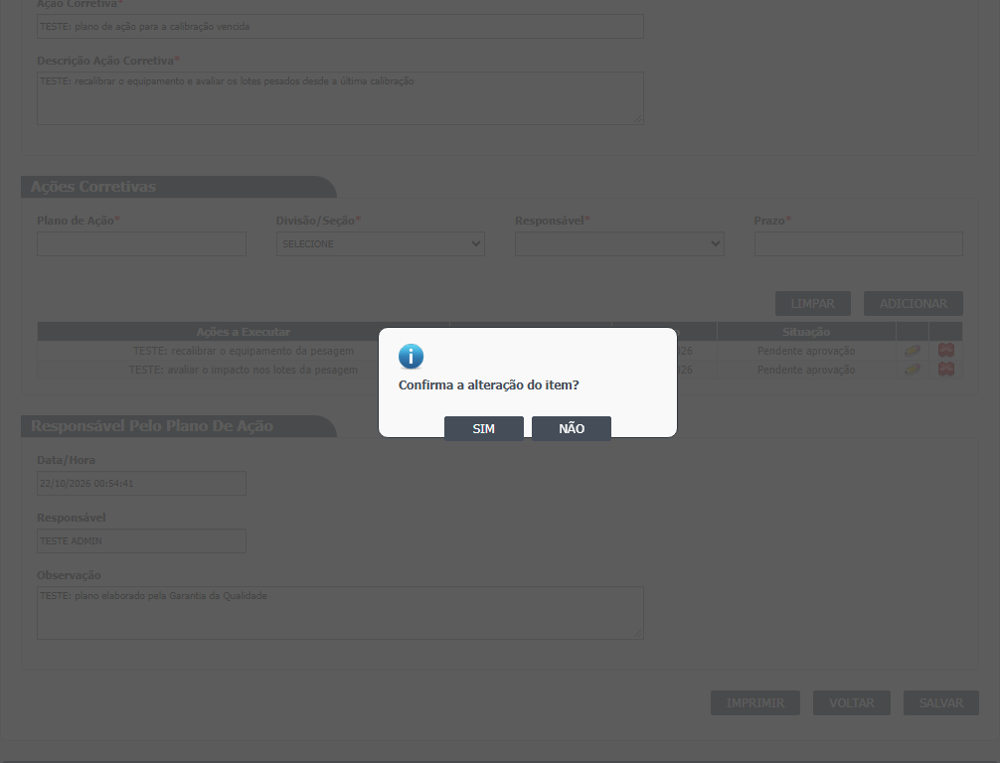
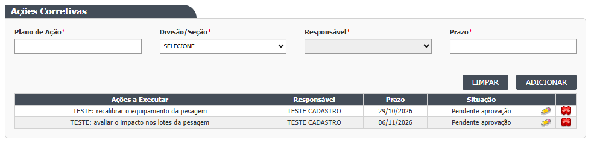
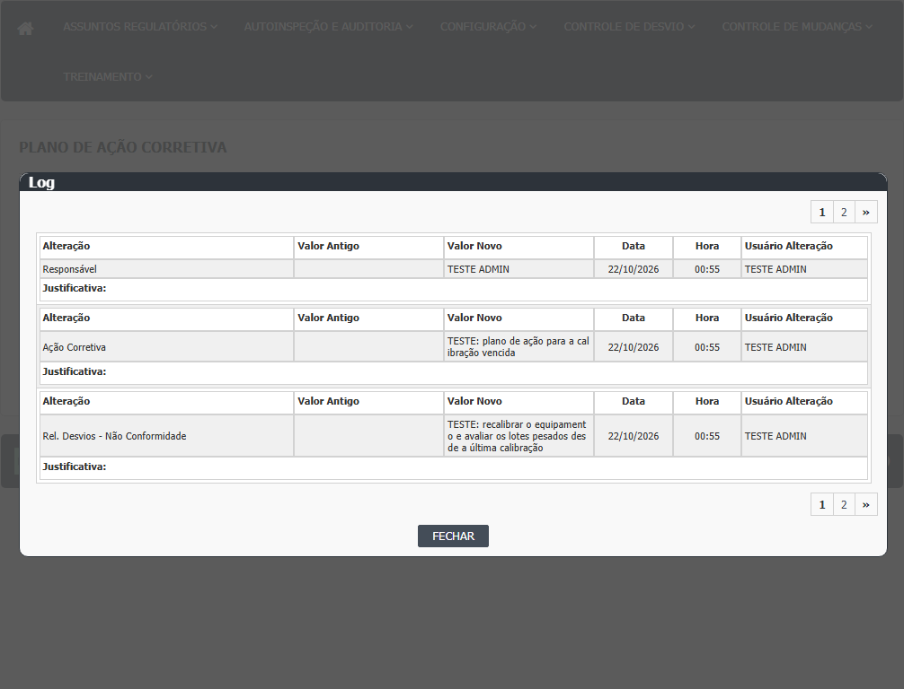

Antes de começar
O desvio precisa ter passado pelo Relatório de CAPA. Se o CAPA não foi salvo, o desvio não aparece nesta lista. Tenha em mãos: o que será feito (título e descrição do plano), quem é o responsável por cada ação (a pessoa precisa estar cadastrada como responsável da divisão/seção, no Principal) e o prazo de cada ação.
Tela de lista (Index)
- Passo 1. No menu, abra Controle de Desvios › Plano de Ação Corretiva. A tela mostra o quadro "Pesquisa" e, abaixo, uma área vazia para os resultados. Nada é listado até você clicar em Pesquisar.
- Passo 2. Se quiser, preencha os filtros: RD/Nº, Descrição, Data Início e Data Fim (o campo de data abre um calendário e aceita só números no formato dd/mm/aaaa), Situação e Meios de Detecção. Clique em Pesquisar. Clique em Limpar para esvaziar os filtros e a lista.
- Passo 3. A lista tem as colunas RD/Nº, Descrição, Meios de Detecção, Data Abertura e Situação, e os ícones de cada linha: Editar (lápis), Histórico, Imprimir e, em casos raros, Visualizar. Há paginação no rodapé da lista.
- Passo 4. Se nada for encontrado, a lista mostra "A pesquisa não retornou nenhum resultado."
- Passo 5. O ícone Histórico abre uma janela com as alterações já registradas do desvio. O ícone Imprimir abre o relatório de CAPA com o plano, em outra aba.
- Passo 6. Clique no lápis (Editar) da linha do desvio para abrir o plano.

Tela do plano (Editar)
A tela é uma página única, com blocos de cima para baixo. O sistema abre o plano; se o desvio ainda não tinha plano, ele cria um plano vazio na hora e já grava (ver Falhas e pontos de atenção).
- Passo 7. Bloco "Resumo do RNC": só leitura. Mostra o número do desvio (RD/Nº), como o desvio foi detectado, a descrição da não conformidade e a observação do desvio. Serve para você conferir que abriu o desvio certo.
- Passo 8. Bloco "Anexos" (opcional): escolha o arquivo, escreva a Descrição do anexo (obrigatória) e clique em Enviar. O sistema avisa "Arquivo enviado com sucesso." e o arquivo aparece na grade, com a lixeira (excluir) e o clipe (abrir). Atenção: o anexo só é gravado de verdade no desvio quando você clicar em Salvar no fim da tela.
- Passo 9. Bloco "Inclusão Plano de Ação": preencha "Ação Corretiva" (o título do plano) e "Descrição Ação Corretiva". Os dois são obrigatórios.
- Passo 10. Bloco "Ações Corretivas": para cada ação, preencha Plano de Ação (o que será feito), escolha a Divisão/Seção (o campo Responsável só libera depois disso), escolha o Responsável (a lista traz só os responsáveis cadastrados naquela divisão) e informe o Prazo (dd/mm/aaaa). Clique em Adicionar. A ação entra na grade "Ações a Executar" com a situação "Pendente aprovação". Visto na rodada 1 (21/10/2026): Adicionar com tudo vazio mostra "Descrição é obrigatória. Data Prazo é obrigatória."; o Responsável só é cobrado depois que a divisão é escolhida, e a divisão em si não é exigida; nada entra na grade (CT-GQ-N07-02).
- Passo 11. Para corrigir uma ação da grade, clique no lápis dela: Plano de Ação e Prazo voltam aos campos; escolha de novo a Divisão/Seção e o Responsável e clique em Adicionar. Para tirar uma ação, clique na lixeira dela (não pede justificativa). Limpar esvazia os campos de ação. Na rodada 1, remover todas as ações pela lixeira e salvar foi aceito pela tela (CT-GQ-N07-06, DV-GQ-020).
- Passo 12. Bloco "Responsável Pelo Plano De Ação": Data/Hora e Responsável são só leitura (data da abertura da tela e nome de quem está conectado). A "Observação" é livre e opcional.
- Passo 13. Clique em Salvar. O sistema pergunta "Confirma a alteração do item?" com SIM e NÃO. NÃO volta para a tela sem gravar.
- Passo 14. Se faltar algo, a tela mostra mensagens em faixa vermelha, junto do bloco que falhou (ver Mensagens do sistema), e nada é gravado. Corrija e salve de novo. Na rodada 1, Salvar sem preencher nada mostrou as cinco mensagens, em duas faixas (título e descrição numa; plano, responsável e prazo na outra), e o desvio ficou em Pendente Plano Ação Corretiva (CT-GQ-N07-01).
- Passo 15. Se tudo estiver certo, aparece "Alteração efetuada com sucesso." Os campos ficam travados, o botão Salvar some e sobra o botão Imprimir. O desvio passa para Pendente Monitoramento do Plano Ação Corretiva. Clique em Voltar para retornar à lista. Confirmado na rodada 1: salvar levou o desvio direto a Pendente Monitoramento do Plano Ação Corretiva, sem aprovação do plano (CT-GQ-019, RD 052/26).





Outras opções da tela
- Imprimir: abre o relatório de CAPA do desvio.
- Voltar: volta para a lista sem gravar o que foi digitado.
- Visualizar: mesma tela com tudo travado e só Imprimir e Voltar. A lista não oferece este ícone para quem pode editar; ele só abre pelo endereço.
- Não há botão Cancelar nem Excluir plano nesta tela.

Rodada 2 (22/10/2026)
Fonte: execucao/2026-10-22-desvios-rodada-2/resultado.md.
- Passo 6 (lista e lápis). O desvio 041/26, em Pendente Monitoramento do Plano Ação Corretiva, apareceu na lista com o lápis, e o plano foi reaberto e alterado por esta tela (CT-GQ-N07-07).
- Passo 11 (corrigir uma ação). Ao clicar o lápis da ação pendente, a descrição e o prazo voltam aos campos, mas a Divisão/Seção e o Responsável voltam em branco. Sem escolhê-los de novo, Salvar recusa com "Responsável na Ação Corretiva número 2 é obrigatório." (DV-GQ-050). Escolhendo de novo e trocando o prazo (de 26/10/2026 para 11/11/2026), Salvar mostrou "Alteração efetuada com sucesso." sem pedir justificativa. A ação que já estava concluída ficou como estava.
- Passo 15 (depois de salvar um plano que já estava em monitoramento). O histórico do desvio traz o prazo antigo e o novo e o responsável antigo e o novo da ação. O responsável do desvio também foi trocado para quem editou o plano (DV-GQ-035, reconfirmado).
- Histórico (janela Log). Para um plano salvo, a janela mostra o título do plano (como "Ação Corretiva"), o responsável, a observação, a data, a hora e o usuário. Não mostra as ações (descrição, prazo, responsável). O que aparece como "Rel. Desvios - Não Conformidade" é a descrição do relatório, não a do plano. A coluna Justificativa fica vazia (CT-GQ-N07-08, DV-GQ-036).
- Não exercitados nesta rodada: anexos, divisão sem responsáveis, prazos impossíveis, plano vazio gravado só por abrir a tela, impressão do CAPA a partir desta tela.
Rodada 3 (22/10/2026)
Fonte: execucao/2026-10-22-desvios-rodada-3b/resultado.md.
- Passos 2 e 3 (filtros da lista). RD/Nº: "038/26" não acha, "038" acha (CT-GQ-N07-11, DV-GQ-026). Situação "Pendente Plano Ação Corretiva": lista vazia, havendo 8 desvios nessa situação (CT-GQ-N07-12, DV-GQ-066). Datas: só a Data Início foi ignorada (13 de 13); Início e Fim no mesmo dia dão lista vazia; só a Data Fim é ignorada (CT-GQ-N07-13, DV-GQ-067).
- Passo 6 (lápis). Abrir o plano de um desvio sem plano e voltar não gravou nada visível: o histórico ficou igual e a situação do desvio não mudou (080/26, CT-GQ-N07-15).
- Passo 8 (anexos). Sem nada: "Nenhuma informação foi enviada. O arquivo não foi informado. A descrição não foi informada."; sem descrição: "A descrição não foi informada."; completo: "Arquivo enviado com sucesso."; Excluir tira o anexo da grade e abrir existe (079/26, CT-GQ-N07-09).
- Passo 10 (prazo). A grade aceita qualquer prazo sem aviso. Ao salvar, 31/02/2026 e 00/00/0000 dão "Ocorreu um erro inesperado."; 01/01/1900 dá "O Prazo na Ação Corretiva número 1 é obrigatório."; 29/02/2028, a data de hoje e uma data passada gravam (078/26, CT-GQ-N07-03, DV-GQ-068).
- Passo 10 (divisão sem responsáveis). Não foi possível testar: todas as 9 divisões têm responsável cadastrado (079/26, CT-GQ-N07-04, bloqueado).
- Passo 12 (observação do plano). Digitar a Observação e depois enviar um anexo apaga a Observação (078/26 e 079/26, CT-GQ-N07-10, DV-GQ-069).
- Histórico (Passo 15). Depois de salvar o plano, a descrição e a observação do plano aparecem no histórico com os nomes dos campos do relatório, "Rel. Desvios - Não Conformidade" e "Observação" (078/26, DV-GQ-072).
Rodada 4 (22/10/2026)
Fonte: execucao/2026-10-22-desvios-rodada-4/resultado.md.
- Passo 2 (filtros). Meios de Detecção: cada um dos sete meios traz só os seus desvios (1, 1, 1, 2, 8, 0 e 0, somando os 13 da lista). A Descrição acha em minúsculas, em maiúsculas e em mistura. Limpar esvazia os filtros e a lista (CT-GQ-N07-14).
- Passo 10 (voltar a "SELECIONE"). Escolher uma divisão e voltar à opção SELECIONE deixa os responsáveis desabilitados e vazios; ocorre um erro de script, que só aparece no console do navegador (031/26, CT-GQ-N07-05).
- Passo 11 (corrigir uma ação só no prazo). Clicar no lápis da ação, mudar só o prazo e clicar em Adicionar: o prazo muda, mas o responsável da ação some da grade (039/26, CT-GQ-N07-22, DV-GQ-085). Para não perder o responsável, escolha de novo a divisão e o responsável antes de Adicionar. O que acontece ao Salvar depois disso não foi registrado nesta rodada.
- Passo 9 (textos longos). Título, descrição e observação do plano com 5.000 caracteres cada um são aceitos e gravados (038/26, CT-GQ-N07-21).
- Passo 5 e Imprimir (lista e tela). O PDF "RELATÓRIO DE CAPA" abre com o desvio, a ação imediata e as ações do plano (038/26 e 078/26, CT-GQ-N07-16), mas:
- no lugar da avaliação sai uma mensagem de erro do relatório (DV-GQ-086, Alta);
- o título, a descrição e a observação do plano não saem; só as ações (DV-GQ-087). Por isso o PDF não serve ainda como prova do plano para quem audita.
Campos da tela
Caminhos das fontes na seção Resumo da tela. Linhas das views .cshtml e dos scripts .js. Obrigatório: "Sim (tela)" quando só o navegador confere; "Sim (servidor)" quando o servidor também recusa.
| Campo na tela | Tipo | Obrigatório | Regra, limite ou valores possíveis | Fonte |
|---|---|---|---|---|
| Quadro Pesquisa: RD/Nº | Texto com máscara 999/99 | Não | Procura o texto no número sequencial do desvio (contém). O sequencial é gravado sem o ano ("005"), e a máscara pede "005/26": a pesquisa com o formato completo não acha nada. Confirmado em 21/10/2026: o número puro acha, "030/26" não (CT-GQ-F05 e CT-GQ-F06, DV-GQ-026) | Index.cshtml:24-25; PlanoAcaoCorretivaIndex.js:6; PlanoAcaoCorretivaRNCController.cs:67-68; RegistroNaoConformidadeController.cs:278-281 |
| Quadro Pesquisa: Descrição | Texto | Não | Descrição do desvio que contém o texto digitado | Index.cshtml:29-30; PlanoAcaoCorretivaRNCController.cs:70-71 |
| Quadro Pesquisa: Data Início | Texto com calendário, máscara 99/99/9999 | Não | Sozinha: desvios abertos naquele dia. Com a Data Fim: abertos entre as duas datas; a Data Fim vale 00:00, então desvios abertos no último dia depois da meia-noite ficam de fora. Rodada 1 (21/10/2026): só com a Data Início de hoje a lista trouxe 6 linhas; com início e fim no mesmo dia, 0 linhas (CT-GQ-F08, DV-GQ-027). Data inválida (31/02/2026) é ignorada em silêncio, sem mensagem (CT-GQ-F09) | Index.cshtml:36; PlanoAcaoCorretivaIndex.js:2-3; PlanoAcaoCorretivaRNCController.cs:73-86 |
| Quadro Pesquisa: Data Fim (até) | Texto com calendário, máscara 99/99/9999 | Não | Ver Data Início | Index.cshtml:40; PlanoAcaoCorretivaIndex.js:4-5 |
| Quadro Pesquisa: Situação | Lista | Não | TODAS, ou "Pendente Plano Ação Corretiva" (única opção). O filtro compara com a situação do plano, não com a do desvio, e devolve lista vazia. Confirmado em 21/10/2026: "Pendente Plano Ação Corretiva" devolveu 0 linhas com a lista cheia (6 linhas) (CT-GQ-F11, DV-GQ-028) | Index.cshtml:51-57; PlanoAcaoCorretivaRNCController.cs:47-49 e 88-96 |
| Quadro Pesquisa: Meios de Detecção | Lista | Não | TODAS, Processo/Produção, Auditoria Interna, Inspeção Sanitária, Controle da Qualidade, Garantia da Qualidade, SAC/Fármaco, Outros | Index.cshtml:61-67; RegistroNaoConformidadeIndexModel.cs:60-82; TipoMetodoDeteccaoNaoConformidade.cs:10-28 |
| Grade de resultados | Tabela paginada | Não | Colunas RD/Nº, Descrição, Meios de Detecção, Data Abertura, Situação (e Id, oculta). Ícones por linha: Editar, Histórico, Visualizar, Imprimir | PlanoAcaoCorretivaIndex.js:34-57 |
| hfId | Oculto | Sim | Número interno do desvio aberto | Editar.cshtml:44 |
| RD/Nº (Resumo do RNC) | Texto, travado | Não se aplica | Número do desvio no formato número/ano | _PartialRegistroNC.cshtml:12 |
| Meios de detecção da não conformidade | 7 botões de opção, travados | Não se aplica | Processo/Produção, Auditoria, Inspeção Sanitária, "Cotrole da Qualidade" (erro de digitação na tela), Garantia da Qualidade, SAC/Fármaco, Outros | _PartialRegistroNC.cshtml:20-83 |
| Outros (Resumo do RNC) | Texto, travado | Não se aplica | Texto do método quando "Outros" | _PartialRegistroNC.cshtml:91 |
| Descrição Não Conformidade | Texto, travado | Marcado com asterisco, mas travado | Descrição do desvio | _PartialRegistroNC.cshtml:99 |
| Observação (Resumo do RNC) | Texto, travado | Marcado com asterisco, mas travado | Observação do desvio (não a do plano) | _PartialRegistroNC.cshtml:103; RegistroNaoConformidadeEditarModel.cs:77 |
| Arquivo (anexo) | Arquivo | Sim (servidor), para enviar | Sem lista de tipos e sem limite de tamanho no código; gravado com o nome original | _UploadArquivo.cshtml:76; UploadController.cs:55-60 e 125-130 |
| Descrição (anexo) | Texto | Sim (servidor), para enviar | "A descrição não foi informada." se vazio | _UploadArquivo.cshtml:82; UploadController.cs:129 |
| Grade de anexos | Tabela | Não | Colunas CÓDIGO, DESCRIÇÃO, ARQUIVO, TAMANHO; ícones Excluir e Abrir. Sem anexos: "Nenhum arquivo listado." | _GridAnexos.cshtml:6-31 |
| Ação Corretiva | Texto de uma linha | Sim (servidor) | Título do plano. Sem limite de tamanho na tela; coluna sem limite no banco | Editar.cshtml:80-81; PlanoAcaoCorretivaValidator.cs:33-37; TBL_PLANO_ACAO_CORRETIVA_RNC.sql:6 |
| Descrição Ação Corretiva | Texto longo (4 linhas) | Sim (servidor) | Sem limite de tamanho | Editar.cshtml:86-87; PlanoAcaoCorretivaValidator.cs:39-43 |
| Acao-Id | Oculto | Não se aplica | Número da ação em edição (vazio para ação nova) | Editar.cshtml:97 |
| Plano de Ação (descrição da ação) | Texto de uma linha | Sim (tela e servidor) | "Descrição é obrigatória." na tela; no servidor, "O Plano de Ação na Ação Corretiva número N é obrigatório." | Editar.cshtml:99-100; PlanoAcaoCorretivaSalvar.js:259-261; PlanoAcaoCorretivaValidator.cs:61-65 |
| Divisão/Seção | Lista | Marcado com asterisco; não conferido | "SELECIONE" e as áreas cadastradas no Principal. Serve só para filtrar o Responsável: a área escolhida não é gravada na ação. Rodada 1: a tela não exige a divisão (CT-GQ-N07-02). Rodada 2 (22/10/2026): ao editar uma ação pelo lápis, a divisão volta em branco (CT-GQ-N07-07, DV-GQ-050) | Editar.cshtml:103-104; PlanoAcaoCorretivaRNCController.cs:185-201 e 346-354 |
| Responsável (da ação) | Lista, travada até escolher a divisão | Sim (tela e servidor) | Responsáveis cadastrados na divisão. "Responsável é obrigatório." na tela. Rodada 1: a mensagem só apareceu depois que a divisão foi escolhida (CT-GQ-N07-02). Rodada 2: ao editar uma ação pelo lápis, o responsável volta em branco; sem escolher de novo, Salvar recusa com "Responsável na Ação Corretiva número 2 é obrigatório." (CT-GQ-N07-07, DV-GQ-050) | Editar.cshtml:107-108; PlanoAcaoCorretivaSalvar.js:262-264 e 592-629; PlanoAcaoCorretivaValidator.cs:67-71 |
| Prazo | Texto com calendário, máscara 99/99/9999 | Sim (tela e servidor) | Data dd/mm/aaaa. O servidor só recusa se faltar ou se o ano for menor que 1930; não compara com a data de hoje. Confirmado em 21/10/2026: plano com prazo no passado foi aceito na criação (RD 054/26, visto no CT-GQ-N08-04) | Editar.cshtml:111-112; PlanoAcaoCorretivaSalvar.js:72-73 e 265-267; PlanoAcaoCorretivaValidator.cs:73-77 |
| Grade Ações a Executar | Tabela | Pelo menos uma ação (exigência que falha: a tela salvou com todas as ações removidas, DV-GQ-020) | Colunas Ações a Executar, Responsável, Prazo, Situação; ícones Ver (lápis) e Excluir. A situação de ação nova aparece como "Pendente aprovação" na tela e é gravada como Pendente | _GridAcoesCorretivas.cshtml:6-19; PlanoAcaoCorretivaSalvar.js:245; PlanoAcaoCorretivaRNCController.cs:352 |
| Data/Hora (Responsável Pelo Plano) | Texto, travado | Não se aplica | Hora em que a tela foi aberta; não é gravada (o servidor usa a própria hora) | Editar.cshtml:138; PlanoAcaoCorretivaRNCController.cs:233 |
| Responsável (Responsável Pelo Plano) | Texto, travado | Não se aplica | Nome de quem está conectado; gravado como responsável do plano ao salvar | Editar.cshtml:144; PlanoAcaoCorretivaRNCController.cs:231-232 |
| Observação (do plano) | Texto longo (4 linhas) | Não | Sem limite de tamanho | Editar.cshtml:150; PlanoAcaoCorretivaRNCController.cs:234 |
Rodada 2 (22/10/2026)
Fonte: execucao/2026-10-22-desvios-rodada-2/resultado.md.
| Campo na tela | O que a rodada 2 mostrou |
|---|---|
| Lista (situações mostradas) | Também mostra os desvios em Pendente Monitoramento do Plano Ação Corretiva, com o lápis (041/26, CT-GQ-N07-07). O roteiro dizia que a lista traria só Pendente Plano |
| Divisão/Seção (da ação) | Volta em branco ao editar a ação pelo lápis (DV-GQ-050) |
| Responsável (da ação) | Volta em branco ao editar a ação pelo lápis; sem escolher de novo, o plano é recusado (DV-GQ-050) |
| Prazo | O prazo de uma ação pendente pôde ser trocado (26/10/2026 para 11/11/2026) e salvo sem justificativa (CT-GQ-N07-07) |
| Grade Ações a Executar | A ação concluída permaneceu como estava; a ação pendente foi alterada (CT-GQ-N07-07) |
Rodada 3 (22/10/2026)
Fonte: execucao/2026-10-22-desvios-rodada-3b/resultado.md. O que a tela mostrou de novo ou contrariou nos campos:
| Campo na tela | O que a rodada 3 mostrou |
|---|---|
| Quadro Pesquisa: RD/Nº | "038/26" não acha; "038" acha (CT-GQ-N07-11, DV-GQ-026) |
| Quadro Pesquisa: Situação | A única opção além de TODAS, "Pendente Plano Ação Corretiva", devolve lista vazia, havendo 8 desvios nessa situação (CT-GQ-N07-12, DV-GQ-066) |
| Quadro Pesquisa: Data Início e Data Fim | Só Início 22/10: ignorada (13 de 13). Início e Fim 22/10: 0, o próprio dia some. Início 21/10 e Fim 22/10: 8, só os de 21/10. Só Fim: ignorada (CT-GQ-N07-13, DV-GQ-067) |
| Prazo | O campo só aceita números e a grade aceita qualquer data sem aviso. Ao salvar: 31/02/2026 e 00/00/0000 dão "Ocorreu um erro inesperado."; 01/01/1900 dá "O Prazo na Ação Corretiva número 1 é obrigatório."; 29/02/2028, a data de hoje e uma data passada gravam (CT-GQ-N07-03, DV-GQ-068) |
| Divisão/Seção | Todas as 9 divisões têm responsável cadastrado; a divisão sem usuários ativos da tela 6 mostra um responsável aqui (CT-GQ-N07-04, caso bloqueado) |
| Observação (do plano) | Fica em branco depois de enviar um anexo (CT-GQ-N07-10, DV-GQ-069) |
| Arquivo e Descrição (anexo) | Mensagens de recusa e de sucesso como previstas; Excluir tira da grade (CT-GQ-N07-09) |
Rodada 4 (22/10/2026)
Fonte: execucao/2026-10-22-desvios-rodada-4/resultado.md. O que a tela mostrou de novo ou contrariou nos campos:
| Campo na tela | O que a rodada 4 mostrou |
|---|---|
| Quadro Pesquisa: Meios de Detecção e Descrição | Cada meio traz só os seus desvios (1, 1, 1, 2, 8, 0 e 0 = 13); a Descrição acha em minúsculas, maiúsculas e mistura; Limpar esvazia filtros e lista (CT-GQ-N07-14) |
| Divisão/Seção ao voltar a SELECIONE | Responsáveis desabilitados e vazios; erro de script no console (031/26, CT-GQ-N07-05) |
| Responsável (da ação), ao corrigir só o prazo | O responsável some da grade depois de Adicionar (039/26, CT-GQ-N07-22, DV-GQ-085) |
| Ação Corretiva (título), Descrição Ação Corretiva e Observação (do plano) | 5.000 caracteres em cada um: gravam (038/26, CT-GQ-N07-21). Não saem no PDF (DV-GQ-087) |
Botões e ações
| Botão ou ação | Quando aparece | O que faz | Para onde leva o desvio | Fonte |
|---|---|---|---|---|
| Pesquisar | Sempre, na lista | Carrega a grade com os filtros; só lista desvios em Pendente Plano Ação Corretiva ou Pendente Monitoramento do Plano Ação Corretiva | Não muda | Index.cshtml:45; PlanoAcaoCorretivaRNCController.cs:65 |
| Limpar (lista) | Sempre, na lista | Esvazia filtros e grade | Não muda | Index.cshtml:44; PlanoAcaoCorretivaIndex.js:80-88 |
| Editar (lápis na linha) | Em toda linha da lista: a regra do plano não esconde o ícone em nenhuma situação | Abre a tela do plano. Se o desvio ainda não tem plano, cria e grava um plano vazio | Não muda a situação do desvio | PlanoAcaoCorretivaIndex.js:42-45; GerenciadorAcessoTelaPlanoAcaoCorretiva.cs:14-19; HSGridApi.js:269; PlanoAcaoCorretivaRNCController.cs:154-164 |
| Histórico (na linha) | Em toda linha | Abre a janela de histórico do desvio (classe RegistroNaoConformidade) | Não muda | PlanoAcaoCorretivaIndex.js:46-49 |
| Visualizar (na linha) | Na prática, nunca: a grade só mostra Visualizar quando Editar não é permitido, e aqui Editar é permitido sempre. A tela abre pelo endereço de Visualizar | Abre o plano com tudo travado, só Imprimir e Voltar | Não muda (mas também cria plano vazio se não houver) | PlanoAcaoCorretivaIndex.js:50-53; HSGridApi.js:269-277; PlanoAcaoCorretivaRNCController.cs:389-404 |
| Imprimir (na linha e na tela) | Em toda linha; na tela, também depois de salvar | Gera o relatório de CAPA com o plano de ação corretiva, em PDF | Não muda | PlanoAcaoCorretivaIndex.js:54-57; Editar.cshtml:157; PlanoAcaoCorretivaRNCController.cs:268-294 |
| Enviar (anexo) | Na tela do plano aberta para edição | Envia o arquivo e a descrição ao servidor; o anexo entra numa lista de sessão e só é gravado no desvio ao Salvar | Não muda | _UploadArquivo.cshtml:87; AnexoController.cs:21-77 |
| Excluir anexo (lixeira) | Em cada linha de anexo, na tela aberta para edição | Marca o anexo como removido na sessão; a remoção vale ao Salvar | Não muda | _GridAnexos.cshtml:51-55; Anexos.js:12-17; PlanoAcaoCorretivaRNCController.cs:307-313 |
| Abrir anexo (clipe) | Em cada linha de anexo, inclusive em Visualizar | Baixa o arquivo | Não muda | _GridAnexos.cshtml:56-60; AnexoController.cs:153-196 |
| Limpar (ação) | Bloco Ações Corretivas | Esvazia Plano de Ação, Divisão/Seção, Responsável e Prazo | Não muda | Editar.cshtml:116; PlanoAcaoCorretivaSalvar.js:299-310 |
| Adicionar (ação) | Bloco Ações Corretivas | Confere descrição, responsável e prazo e põe a ação na grade (ainda não gravada). Se o campo Acao-Id estiver preenchido, altera a ação existente | Não muda | Editar.cshtml:117; PlanoAcaoCorretivaSalvar.js:224-253 |
| Ver (lápis da ação) | Em cada ação da grade, na tela aberta para edição | Copia descrição e prazo para os campos; é preciso escolher de novo a divisão e o responsável. Rodada 2: a divisão e o responsável voltam em branco (DV-GQ-050) | Não muda | _GridAcoesCorretivas.cshtml:42-46; PlanoAcaoCorretivaSalvar.js:279-288 |
| Excluir (lixeira da ação) | Em cada ação da grade, na tela aberta para edição | Marca a ação como removida (vai para a lixeira ao Salvar), sem justificativa. Rodada 1: com todas as ações removidas, Salvar foi aceito (DV-GQ-020) | Não muda | _GridAcoesCorretivas.cshtml:47-51; PlanoAcaoCorretivaSalvar.js:290-297; PlanoAcaoCorretivaRNCController.cs:353 e 364 |
| Salvar | Na tela aberta para edição, até gravar com sucesso | Pergunta "Confirma a alteração do item?"; se SIM, valida e grava o plano, as ações e os anexos | Pendente Monitoramento do Plano Ação Corretiva, qualquer que seja a situação anterior. Confirmado em 21/10/2026 (CT-GQ-019); vale também com a grade de ações vazia (DV-GQ-020) | Editar.cshtml:159; PlanoAcaoCorretivaSalvar.js:202-222; PlanoAcaoCorretivaRNCController.cs:209-266 |
| Imprimir (botão da tela) | Sempre; depois de salvar, só ele sobra além de Voltar | Igual ao Imprimir da lista | Não muda | Editar.cshtml:157; PlanoAcaoCorretivaSalvar.js:588-590 |
| Voltar | Sempre | Volta para a lista, sem gravar | Não muda | Editar.cshtml:158; PlanoAcaoCorretivaSalvar.js:442-444 |
| SIM e NÃO (confirmação) | Ao clicar em Salvar | SIM segue; NÃO cancela a gravação | Não muda com NÃO | _ConfirmacaoPopUpPartail.cshtml:8-9 e 31-53 |
Rodada 2 (22/10/2026)
Fonte: execucao/2026-10-22-desvios-rodada-2/resultado.md.
- Editar (lápis da lista): abre o plano de um desvio em Pendente Monitoramento, e o plano pode ser alterado e salvo (CT-GQ-N07-07).
- Ver (lápis da ação): não devolve a divisão nem o responsável (DV-GQ-050).
- Salvar (plano em monitoramento): aceita a alteração sem pedir justificativa e troca o responsável do desvio para quem salvou (CT-GQ-N07-07, DV-GQ-035).
- Log (histórico): mostra o plano, mas não as ações (CT-GQ-N07-08, DV-GQ-036).
Rodada 3 (22/10/2026)
Fonte: execucao/2026-10-22-desvios-rodada-3b/resultado.md.
- Pesquisar: o filtro Situação devolve lista vazia e os filtros de data se comportam de forma irregular (CT-GQ-N07-12 e N07-13).
- Editar (lápis da lista): abrir o plano de um desvio sem plano e usar Voltar não gravou nada visível (CT-GQ-N07-15).
- Enviar (anexo): com a Observação já digitada, o envio a apaga (CT-GQ-N07-10); as mensagens de sem arquivo, sem descrição e sucesso aparecem como previsto (CT-GQ-N07-09).
- Excluir anexo e Abrir anexo: Excluir tira o anexo da grade; abrir existe (CT-GQ-N07-09).
- Adicionar (ação): aceita qualquer prazo sem aviso (CT-GQ-N07-03).
- Salvar: com prazo impossível dá "Ocorreu um erro inesperado." (CT-GQ-N07-03).
Rodada 4 (22/10/2026)
Fonte: execucao/2026-10-22-desvios-rodada-4/resultado.md.
- Imprimir (lista e tela): abre o PDF "RELATÓRIO DE CAPA" com o desvio, a ação imediata e as ações. No lugar da avaliação sai uma mensagem de erro do relatório (DV-GQ-086), e o título, a descrição e a observação do plano não saem (DV-GQ-087) (CT-GQ-N07-16 e N07-21).
- Ver (lápis da ação) e Adicionar: mudar só o prazo e Adicionar apaga o responsável da ação na grade (CT-GQ-N07-22, DV-GQ-085).
- Divisão/Seção, opção SELECIONE: esvazia e desabilita os responsáveis, com erro de script no console (CT-GQ-N07-05).
- Pesquisar e Limpar: o filtro por Meios de Detecção e por Descrição funciona; Limpar esvazia filtros e lista (CT-GQ-N07-14).
Mensagens do sistema
| Mensagem (texto exato do código) | Quando aparece | Fonte |
|---|---|---|
| Confirma a alteração do item? | Ao clicar em Salvar (a versão "Confirma a inclusão do item?" existe no script, mas só valeria com o número do desvio igual a zero, o que não ocorre) | PlanoAcaoCorretivaSalvar.js:211 e 217 |
| Alteração efetuada com sucesso. | Plano gravado | GQControllerBase.cs:95; PlanoAcaoCorretivaRNCController.cs:245 |
| A Ação Corretiva é obrigatória. | Título do plano vazio (faixa do bloco Inclusão Plano de Ação) | PlanoAcaoCorretivaValidator.cs:35 |
| A Descrição Ação Corretiva é obrigatória. | Descrição do plano vazia (mesma faixa) | PlanoAcaoCorretivaValidator.cs:41 |
| O Plano de Ação na Ação Corretiva é obrigatória. | Nenhuma ação na grade (faixa do bloco Ações Corretivas) | PlanoAcaoCorretivaValidator.cs:47 |
| Responsável na Ação Corretiva é obrigatório. | Nenhuma ação na grade | PlanoAcaoCorretivaValidator.cs:50 |
| O Prazo na Ação Corretiva é obrigatório. | Nenhuma ação na grade | PlanoAcaoCorretivaValidator.cs:53 |
| O Plano de Ação na Ação Corretiva número N é obrigatório. | Ação de número N sem descrição | PlanoAcaoCorretivaValidator.cs:63 |
| Responsável na Ação Corretiva número N é obrigatório. | Ação de número N sem responsável | PlanoAcaoCorretivaValidator.cs:69 |
| O Prazo na Ação Corretiva número N é obrigatório. | Ação de número N sem prazo, ou com ano menor que 1930 | PlanoAcaoCorretivaValidator.cs:75 |
| Entidade de domínio não pode ser nula. | Falha interna: desvio não encontrado | PlanoAcaoCorretivaValidator.cs:17 |
| Entidade de Plano de Ação não pode ser nula. | Falha interna: desvio sem plano | PlanoAcaoCorretivaValidator.cs:26 |
| Descrição é obrigatória. | Adicionar ação sem o campo Plano de Ação | PlanoAcaoCorretivaSalvar.js:260 |
| Responsável é obrigatório. | Adicionar ação sem responsável | PlanoAcaoCorretivaSalvar.js:263 |
| Data Prazo é obrigatória. | Adicionar ação sem prazo | PlanoAcaoCorretivaSalvar.js:266 |
| Essa área não possui responsáveis. | Divisão escolhida sem responsáveis. O texto é devolvido pelo servidor, mas a tela não tem a faixa que o exibiria (A confirmar no teste) | PlanoAcaoCorretivaRNCController.cs:441; PlanoAcaoCorretivaSalvar.js:619 |
| Ocorreu um erro inesperado. | Qualquer falha não prevista ao abrir ou salvar (por exemplo, desvio inexistente ou data inválida) | GQControllerBase.cs:93; PlanoAcaoCorretivaRNCController.cs:141-145 e 263 |
| Ocorreu um erro interno não esperado. | Falha de comunicação ao enviar o plano ou a lista | HSApi.js:23 |
| Arquivo enviado com sucesso. | Anexo enviado | _UploadArquivo.cshtml:44 |
| Nenhuma informação foi enviada. | Enviar anexo sem nenhum arquivo selecionado na requisição | UploadController.cs:127 |
| O arquivo não foi informado. | Enviar anexo sem arquivo | UploadController.cs:128 |
| A descrição não foi informada. | Enviar anexo sem descrição | UploadController.cs:129 |
| Nenhum arquivo listado. | Grade de anexos vazia | _GridAnexos.cshtml:28 |
| Anexo não encontrado. | Excluir anexo cuja chave não está na sessão | AnexoController.cs:89 |
| Chave do anexo inválido. | Abrir anexo sem chave | AnexoController.cs:157 |
| Arquivo não encontrado. | Abrir anexo cujo arquivo não está no disco do servidor | AnexoController.cs:167 |
| A pesquisa não retornou nenhum resultado. | Lista ou grade de ações vazia | HSGridApi.js:209; _GridAcoesCorretivas.cshtml:26 |
| Não foi possível obter as solicitações mudanças | Falha ao pesquisar (o texto é de outra tela, "mudanças") | PlanoAcaoCorretivaRNCController.cs:119 |
| Não foi possível gerar o relatório de CAPA | Falha ao imprimir | PlanoAcaoCorretivaRNCController.cs:292 |
Visto na rodada 1 (21/10/2026), com o mesmo texto do código:
- Salvar sem preencher nada: as cinco mensagens apareceram, em duas faixas: "A Ação Corretiva é obrigatória. A Descrição Ação Corretiva é obrigatória." e "O Plano de Ação na Ação Corretiva é obrigatória. Responsável na Ação Corretiva é obrigatório. O Prazo na Ação Corretiva é obrigatório." (CT-GQ-N07-01). Diferente das telas 1 e 6, aqui nenhuma mensagem se perdeu (DV-GQ-033 não se repete).
- Adicionar ação vazia: "Descrição é obrigatória. Data Prazo é obrigatória."; "Responsável é obrigatório." só depois de escolher a divisão (CT-GQ-N07-02).
- "Alteração efetuada com sucesso." também apareceu ao salvar o plano com a grade de ações vazia, o que não deveria acontecer (CT-GQ-N07-06, DV-GQ-020).
- Não vistas nesta rodada: as demais mensagens da tabela (anexos, erros internos, impressão).
Rodada 2 (22/10/2026)
Fonte: execucao/2026-10-22-desvios-rodada-2/resultado.md. Mensagens vistas, com o texto exato da tela:
- "Responsável na Ação Corretiva número 2 é obrigatório." ao salvar depois de editar a ação 2 pelo lápis sem escolher a divisão e o responsável de novo (CT-GQ-N07-07, DV-GQ-050).
- "Alteração efetuada com sucesso." ao salvar a alteração do prazo; nenhuma mensagem pediu justificativa (CT-GQ-N07-07).
- Nenhuma outra mensagem nova foi provocada.
Rodada 3 (22/10/2026)
Fonte: execucao/2026-10-22-desvios-rodada-3b/resultado.md. Mensagens vistas, com o texto exato da tela:
- "Ocorreu um erro inesperado." ao salvar com prazo 31/02/2026 ou 00/00/0000 (CT-GQ-N07-03, DV-GQ-068).
- "O Prazo na Ação Corretiva número 1 é obrigatório." ao salvar com prazo 01/01/1900 (CT-GQ-N07-03).
- "Alteração efetuada com sucesso." ao salvar com prazo 29/02/2028, a data de hoje ou uma data passada (CT-GQ-N07-03).
- "Nenhuma informação foi enviada.", "O arquivo não foi informado.", "A descrição não foi informada." e "Arquivo enviado com sucesso." no envio de anexo (CT-GQ-N07-09).
- "Essa área não possui responsáveis." não apareceu, porque não há divisão sem responsável cadastrado (CT-GQ-N07-04, bloqueado).
Rodada 4 (22/10/2026)
Fonte: execucao/2026-10-22-desvios-rodada-4/resultado.md. Mensagens vistas, com o texto exato da tela:
- "Alteração efetuada com sucesso." ao gravar o plano com 5.000 caracteres no título, na descrição e na observação (CT-GQ-N07-21).
- Ao imprimir, o PDF traz uma mensagem de erro do relatório no lugar do bloco da avaliação (CT-GQ-N07-16, DV-GQ-086). Não é mensagem do código desta tela.
- Ao voltar a divisão para SELECIONE não aparece mensagem para o usuário; o erro de script fica só no console do navegador (CT-GQ-N07-05).
- Nenhuma mensagem nova de recusa foi provocada.